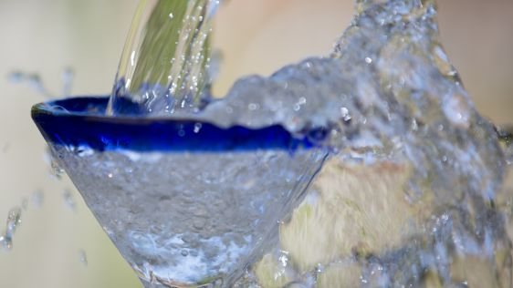

Fresh Tap Water

Description
This recipe creates a deliciously refreshing, low calorie,
beverage with minimal preparation time. Even your kids will
be able to make it!
Ingredients
Steps
- Place glass under the tap.
- Turn tap on.
- Turn tap off.
- Top up glass with additional teaspoons of water until full.
Return to main page